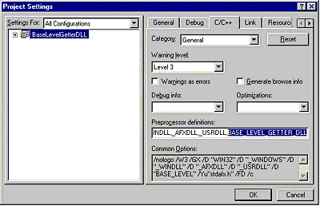
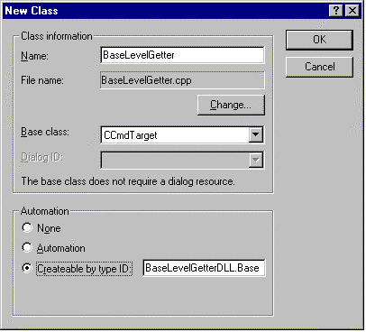
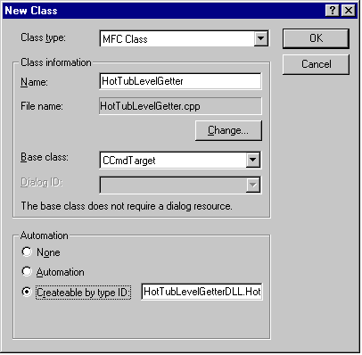
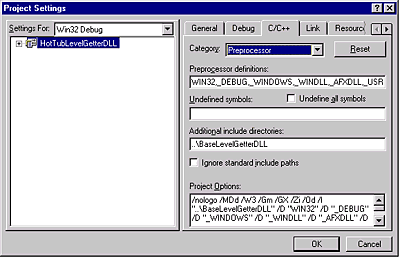
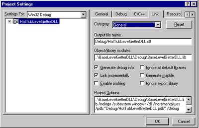
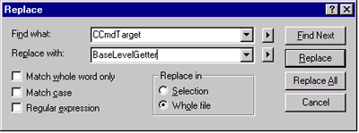
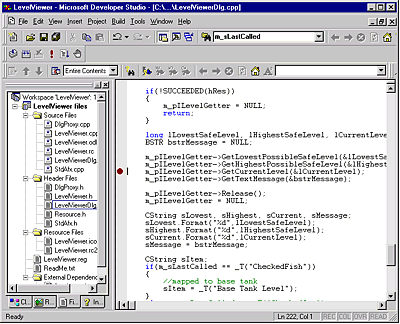
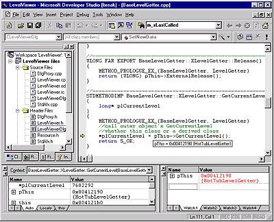
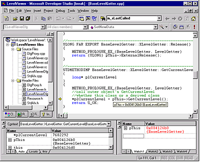

| ||
Steve Robinson and Alex Krassel
Panther Software
August 8, 1997
(See the Overview for a full table of contents and downloadable Microsoft Word version of this article with samples.)
In Part 1 of the article, we showed the importance of interface immutability, and demonstrated how a developer can build applications that can easily interchange components once an interface is developed. What if the interface of the existing COM server had hundreds of methods? In the sample in Part 1, we made it easy to clone the ILevelGetter interface because it had only four methods. Using the OLE/COM Object Viewer, take a quick look at some of the other type libraries on your computer. As you can see, many components have interfaces with a significant number of methods. Cloning an interface that implemented hundreds of methods would be quite a burden if you needed to override only a few methods.
The rules of COM specify that if you derive an interface from an existing interface, you need to implement all its methods, because interface declarations contain pure virtual functions. The same rule that guarantees interchangeable machine parts might also create laborious, unnecessary implementation burdens for developers!
But what if you could inherit interfaces without having to re-implement all the methods? What if you could create a component, inherit interfaces and functionality, and override functionality as you saw fit? Today, it is impossible to do this with COM objects developed outside your organization. However, if the developers within your enterprise utilize a programming language that supports inheritance and polymorphism, such as Visual C++, you can do exactly this. In fact, MFC makes it extremely easy to do, as we will demonstrate.
At the root of MFC is CCmdTarget. CCmdTarget is not only the base class for the message-map architecture, but also contains Dispatch maps that expose interfaces, such as IDispatch and IUnknown. Every direct descendant of CCmdTarget created with Class Wizard contains these interfaces and its own CLSID. CCmdTarget is a key framework class and a base class for MFC classes used every day, such as CView, CWinApp, CDocument, CWnd, and CFrameWnd. Accordingly, every class derived from CCmdTarget can implement its own CLSID and Interfaces.
The sample code we are going to review will show inheritance of interfaces by deriving new C++ classes from classes derived from a CCmdTarget. In our base class, we will implement an interface with methods that call virtual member functions in the C++ class. Our derived class will override some of the selected virtual functions. Most importantly, instead of implementing the derived class in the same DLL, we will create a distinct DLL with its own CLSID. The effective result will be inheritance of interface implementation from one binary to another without re-implementing the original interface.
Let's start by reviewing the code in project BaseLevelGetterDLL. BaseLevelGetterDLL is a typical MFC DLL. It was created with AppWizard as a "regular DLL using the shared MFC DLL." It also supports automation. Once the AppWizard process was complete, the file BaseLevelGetterExport.h was created, and BASE_LEVEL_GETTER_DLL was included as a preprocessor definition in Project | Settings | C++. Both BaseLevelGetterExport.H and the Project | Settings dialog are shown below.
//BaseLevelGetterExport.h #ifndef BASE_LEVEL_GETTER_EXPORT_DLL_H #define BASE_LEVEL_GETTER_EXPORT_DLL_H #if defined(BASE_LEVEL_GETTER_DLL) #define BASE_LEVEL_GETTER_EXPORT __declspec(dllexport) #else #define BASE_LEVEL_GETTER_EXPORT __declspec(dllimport) #endif #endif //BASE_LEVEL_GETTER_EXPORT_DLL_H

With BASE_LEVEL_GETTER_DLL defined, we can create classes and export them from our DLL.
The next step is to create our C++ class that will contain our interface. Using Class Wizard, we will create a class derived from CCmdTarget with just a few mouse clicks. By selecting Createable by type ID in Class Wizard's New Class dialog, our new class will be created with the IMPLEMENT_OLECREATE macro giving the class its own CLSID and IDispatch interface.

Glancing at BaseLevelGetter.CPP, we see the CLSID:
//Here is our CLSID
// {C20EA055-F61C-11D0-A25F-000000000000}
IMPLEMENT_OLECREATE(BaseLevelGetter, "BaseLevelGetterDLL.BaseLevelGetter", 0xc20ea055, 0xf61c, 0x11d0, 0xa2, 0x5f, 0x0, 0x0, 0x0, 0x0, 0x0, 0x0)
and an interface called IBaseLevelGetter, which is of type IDispatch:
// {C20EA054-F61C-11D0-A25F-000000000000}
static const IID IID_IBaseLevelGetter =
{ 0xc20ea054, 0xf61c, 0x11d0, { 0xa2, 0x5f, 0x0, 0x0, 0x0, 0x0, 0x0, 0x0 } };
BEGIN_INTERFACE_MAP(BaseLevelGetter, CCmdTarget)
INTERFACE_PART(BaseLevelGetter, IID_IBaseLevelGetter, Dispatch)
END_INTERFACE_MAP()
Rather than working with the default interface provided by Class Wizard, we are going to add our own custom interface to demonstrate how easy it is to add interfaces to CCmdTarget-derived classes. The first thing we need to do is to define our interface. Defining an interface is always the same. Every interface must have an IID and have IUnknown as a base interface somewhere in its hierarchy. And it needs to implement IUnknown's three methods. In ILevelGetter.H, we used GUIDGEN.EXE (located in \Program Files\DevStudio\VC\Bin) to generate a unique IID for our interface and the derived interface from IUnknown. In addition to IUnknown's three pure virtual functions, we added four more pure virtual functions that will be implemented in our COM object. Below is the exact code from ILevelGetter.H.
#ifndef ILEVELGETTER_H
#define ILEVELGETTER_H
// {BCB53641-F630-11d0-A25F-000000000000}
static const IID IID_ILevelGetter =
{ 0xbcb53641, 0xf630, 0x11d0, { 0xa2, 0x5f, 0x0, 0x0, 0x0, 0x0, 0x0, 0x0 } };
interface ILevelGetter : public IUnknown
{
//first add the three always required methods
virtual HRESULT STDMETHODCALLTYPE
QueryInterface(REFIID riid, LPVOID* ppvObj) = 0;
virtual ULONG STDMETHODCALLTYPE AddRef() = 0;
virtual ULONG STDMETHODCALLTYPE Release() = 0;
//now add methods for this custom interface
virtual HRESULT STDMETHODCALLTYPE
GetCurrentLevel(long* plCurrentLevel) = 0;
virtual HRESULT STDMETHODCALLTYPE
GetHighestPossibleSafeLevel(long* plHighestSafeLevel) = 0;
virtual HRESULT STDMETHODCALLTYPE
GetLowestPossibleSafeLevel(long* plLowestSafeLevel) = 0;
virtual HRESULT STDMETHODCALLTYPE
GetTextMessage(BSTR* ppbstrMessage) = 0;
};
The next step is to declare our interface methods in BaseLevelGetter.H. At the top of BaseLevelGetter.H, add an include directive for our interface declaration as follows:
#include "ILevelGetter.h"
Once we include ILevelGetter.H, we can add our interface methods using the BEGIN_INTERFACE_PART macro. In summary, the BEGIN_INTERFACE_MACRO creates a nested class of type XLevelGetter and a class member m_xLevelGetter in BaseLevelGetter. (For a thorough description of the BEGIN_INTERFACE_PART macro, see MFC Technical Note 38.) Each method in the interface is declared in the macro in the same manner as if there were no macro wrapper. A quick review shows that the method declarations in ILevelGetter.H are exactly the same as the method declarations declared in the ATL version.
BEGIN_INTERFACE_PART(LevelGetter, ILevelGetter) STDMETHOD(GetCurrentLevel) (long* plCurrentLevel); STDMETHOD(GetHighestPossibleSafeLevel) (long* plHighestSafeLevel); STDMETHOD(GetLowestPossibleSafeLevel) (long* plLowestSafeLevel); STDMETHOD(GetTextMessage) (BSTR* ppbstrMessage); END_INTERFACE_PART(LevelGetter)
Because our goal is to effectively inherit interfaces from one binary to another without having to re-implement all the methods, we are going to add four virtual functions to our class. Each virtual function will correspond to a method in the ILevelGetter interface. In the sample code, these methods are defined at the bottom of the class declaration, immediately after the BEGIN_INTERFACE_PART macro.
//since the class can be dynamically created //these virtual functions cannot be pure virtual long GetCurrentLevel(); virtual long GetHighestSafeLevel(); virtual long GetLowestSafeLevel(); virtual CString GetMessage();
One thing to note is that because our CCmdTarget-derived class uses DECLARE_DYNCREATE, these functions cannot be pure virtual functions.
The last task is to declare the class as "exportable." To do this, we need only to include our export definition in the class definition. The lines appear as:
#include "BaseLevelGetterExport.h"
class BASE_LEVEL_GETTER_EXPORT BaseLevelGetter : public CCmdTarget
{
Implementation of our interface is equally easy. The first thing we need to do is to add support for the new interface ILevelGetter. The general rule is to add an INTERFACE_PART macro between BEGIN_INTERFACE_PART and END_INTERFACE_PART for every interface supported. In BaseLevelGetter.CPP, this is accomplished by adding the following line:
INTERFACE_PART(BaseLevelGetter, IID_ILevelGetter, LevelGetter)
So that the entire INTERFACE_PART appears as:
BEGIN_INTERFACE_MAP(BaseLevelGetter, CCmdTarget) INTERFACE_PART(BaseLevelGetter, IID_IBaseLevelGetter, Dispatch) INTERFACE_PART(BaseLevelGetter, IID_ILevelGetter, LevelGetter) END_INTERFACE_MAP()
The next step is to implement ILevelGetter's methods. The first three methods that should be implemented are IUnknown's QueryInterface, AddRef, and Release. These methods are shown below.
//------------------------------------------------------------------------
HRESULT FAR EXPORT BaseLevelGetter::XLevelGetter::QueryInterface
(
REFIID iid,
LPVOID* ppvObj
)
{
METHOD_PROLOGUE_EX_(BaseLevelGetter, LevelGetter)
return (HRESULT) pThis->ExternalQueryInterface(&iid, ppvObj);
}
//-------------------------------------------------------------------------
ULONG FAR EXPORT BaseLevelGetter::XLevelGetter::AddRef()
{
METHOD_PROLOGUE_EX_(BaseLevelGetter, LevelGetter)
return (ULONG) pThis->ExternalAddRef();
}
//-------------------------------------------------------------------------
ULONG FAR EXPORT BaseLevelGetter::XLevelGetter::Release()
{
METHOD_PROLOGUE_EX_(BaseLevelGetter, LevelGetter)
return (ULONG) pThis->ExternalRelease();
}
ILevelGetter's four methods are implemented in a very similar fashion. Rather than performing actual processing, each method calls its associated function through the pointer pThis. This actually requires some additional explanation. If you look at the definition of the BEGIN_INTERFACE_PART(…) macro (file …\MFC\include\AFXDISP.H), you will notice that this macro is a nested class declaration. The macro forces the nested class (in our case, XLevelGetter) to be derived from the interface (ILevelGetter, in our example) and to be declared within the existing class (BaseLevelGetter).
The END_INTERFACE_PART(…) macro completes the "inner" XLevelGetter class definition and declares a member variable of that class called m_xLevelGetter. Because m_xLevelGetter is a member of the BaseLevelGetter class, we could implement some complicated pointer arithmetic to get from this of the XLevelGetter object to this of the containing BaseLevelGetter object. However, MFC provides another macro that does just that. This macro is called METHOD_PROLOGUE_EX_, and in our particular case, it will generate the variable BaseLevelGetter* pThis. You can use pThis to access public members and methods of the "outer" BaseLevelGetter class, including virtual (polymorphic) functions, as we do in the samples. Calling virtual functions in the "outer" class will, in effect, cause interface inheritance. Notice that BaseLevelGetter's virtual functions return meaningless values and have comments to remind developers creating derived classes to override these functions.
Another way to show the virtual relationship, and perhaps much easier to read, is to "set an owner object" in the XLevelGetter class (the class created by the BEGIN_INTERFACE_PART macro). Inside BaseLevelGetter.H's BEGIN_INTERFACE_PART macro, we add two functions and a class member as follows:
XLevelGetter() { m_pOwner = NULL; } //constructor sets member to NULL
void SetOwner( BaseLevelGetter* pOwner ) { m_pOwner = pOwner; } //set the member
BaseLevelGetter* m_pOwner; //class member
Inside BaseLevelGetter's constructor, we call XLevelGetter::SetOwner. As noted earlier, the BEGIN_INTERFACE_PART macro adds a class member to BaseLevelGetter called m_xLevelGetter that represents the LevelGetter. In BaseLevelGetter's constructor we call:
m_xLevelGetter.SetOwner( this );
which sets m_pOnwer to a valid object.
Below is the implementation of ILevelGetter's four methods and BaseLevelGetter's four associated virtual functions. The latter two methods, GetLowestPossibleSafeLevel and GetTextMessage use the "owner object" implementation style.
//------------------------------------------------------------------------
STDMETHODIMP BaseLevelGetter::XLevelGetter::GetCurrentLevel
(
long* plCurrentLevel
)
{
METHOD_PROLOGUE_EX_(BaseLevelGetter, LevelGetter)
//call outer object's GetCurrentLevel
//whether this class or a derived class
*plCurrentLevel = pThis->GetCurrentLevel();
return S_OK;
}
//-------------------------------------------------------------------------
STDMETHODIMP BaseLevelGetter::XLevelGetter::GetHighestPossibleSafeLevel
(
long* plHighestSafeLevel
)
{
METHOD_PROLOGUE_EX_(BaseLevelGetter, LevelGetter)
//call outer object's GetHighestSafeLevel
//whether this class or a derived class
*plHighestSafeLevel = pThis->GetHighestSafeLevel();
return S_OK;
}
//-------------------------------------------------------------------------
STDMETHODIMP BaseLevelGetter::XLevelGetter::GetLowestPossibleSafeLevel
(
long* plLowestSafeLevel
)
{
METHOD_PROLOGUE_EX_(BaseLevelGetter, LevelGetter)
//call outer object's GetLowestSafeLevel
//whether this class or a derived class
if( m_pOnwer != NULL)
{
*plLowestSafeLevel = m_pOwner->GetHighestSafeLevel();
}
else
{
ASSERT(FALSE);
}
return S_OK;
}
//------------------------------------------------------------------------
STDMETHODIMP BaseLevelGetter::XLevelGetter::GetTextMessage
(
BSTR* ppbstrMessage
)
{
METHOD_PROLOGUE_EX_(BaseLevelGetter, LevelGetter)
//call outer object's GetMessage
//whether this class or a derived class
CString sMessage;
If( m_pOwner != NULL )
{
sMessage = m_pOwner->GetMessage();
}
else
{
ASSERT(FALSE);
}
*ppbstrMessage = sMessage.AllocSysString();
return S_OK;
}
//---------------------------------------------------------------------
long BaseLevelGetter::GetCurrentLevel()
{
TRACE("Derived classes should override!");
return -1;
}
//---------------------------------------------------------------------
long BaseLevelGetter::GetHighestSafeLevel()
{
TRACE("Derived classes should override!");
return -1;
}
//---------------------------------------------------------------------
long BaseLevelGetter::GetLowestSafeLevel()
{
TRACE("Derived classes should override!");
return -1;
}
//---------------------------------------------------------------------
CString BaseLevelGetter::GetMessage()
{
TRACE("Derived classes should override!");
return "BaseLevelGetter";
}
Compile and link the application. Once the DLL is built, copy it to the Windows\System directory (\WINNT\System32 on Windows NT).
Important: Because we will be using the BaseLevelGetter's ILevelGetter interface, remember to register it with RegSvr32 once it is copied to the appropriate System directory. If we were using BaseLevelGetter as an abstract base class (e.g., BaseLevelGetter's virtual functions had to be overridden) and their implementation perhaps threw ASSERTion errors, there would be no need to register the COM object with RegSvr32.
To build a COM object that implements the ILevelGetter interface but does not have to re-implement all the methods, we create a COM DLL in the exact same manner as BaseLevelGetterDLL: We create an MFC AppWizard DLL that supports automation, and we add a class derived from CCmdTarget. The samples contain a project called HotTubLevelGetterDLL with a CmdTarget-derived class, HotTubLevelGetter, which was created in Class Wizard's New Class dialog, as shown below.

The next step is to add BaseLevelGetterDLL to the include path by setting it as an Additional Include directory in the Project | Settings | C/C++ tab, as noted below.

And link BaseLevelGetterDLL.lib by adding it as a Library Module in the Project | Settings | Link tab.

Once our project settings are complete, we follow five simple steps to complete the plug-in COM DLL.
1. Open HotTubLevelGetter.H and replace all instances of CCmdTarget with BaseLevelGetter (there is only one instance of CCmdTarget in HotTubLevelGetter.H).

2. Add BaseLevelGetter.H as an include to the file, as shown below:
#include <BaseLevelGetter.h>
class HotTubLevelGetter : public BaseLevelGetter
{
3. Override virtual functions of BaseLevelGetter as desired. In the sample code, the following two virtual functions are declared.
virtual CString GetMessage( ) { return "HotTubLevelGetter"; }
virtual long GetCurrentLevel( ) { return -2; }
4. Open HotTubLevelGetter.CPP and replace all instances of CCmdTarget with BaseLevelGetter (there are five instances of CCmdTarget in HotTubLevelGetter.CPP).
5. Compile and link. Remember to register your COM DLL with RegSvr32.
Before we demonstrate the COM plug-in in a client, let's take a look at what we have built. Classes BaseLevelGetter and HotTubLevelGetter both derive from CCmdTarget. When we created HotTubLevelGetter, we told Class Wizard to derive it from CCmdTarget. Recall that every class created with Class Wizard as a direct descendant of CCmdTarget is supplied with its own CLSID and IDispatch interface. When we changed the base class of HotTubLevelGetter from CCmdTarget to BaseLevelGetter, HotTubLevelGetter inherited BaseLevelGetter's virtual methods.
When a client needs to access HotTubLevelGetter, it does the typical CoCreateInstance(…) -- passing the CLSID of HotTubLevelGetter and IID_ILevelGetter, and calling ILevelGetter's methods. When a method is executed such as GetCurrentLevel, METHOD_PROLOGUE_EX_ sets pThis from an offset table, and pThis actually points to an instance of HotTubLevelGetter. The same thing occurs when we use m_pOwner (it also points to an instance of HotTubLevelGetter); but it is a little easier to understand, because we can watch the m_xLevelGetter.SetOwner( this ) method execute. Let's look at the client and set some break points.
In the sample code, open LevelViewer in the LevelViewer2 folder. This project is almost identical to the first LevelViewer. OnFish is mapped to BaseLevelGetter, and OnGas is mapped to HotTubLevelGetter, as shown in the following code.
//-----------------------------------------------------------
void CLevelViewerDlg::OnFish() //mapped to BaseLevelGetter
{
m_sLastCalled = _T("CheckedFish");
CLSID clsid;
HRESULT hRes = AfxGetClassIDFromString("BaseLevelGetterDLL.BaseLevelGetter", &clsid);
if(SUCCEEDED(hRes))
SetNewData(clsid, IID_ILevelGetter);
}
//------------------------------------------------------------
void CLevelViewerDlg::OnGas() //mapped to HotTubLevelGetter
{
m_sLastCalled = _T("CheckedGas");
CLSID clsid;
HRESULT hRes = AfxGetClassIDFromString("HotTubLevelGetterDLL.HotTubLevelGetter", &clsid);
if(SUCCEEDED(hRes))
SetNewData(clsid, IID_ILevelGetter);
}
Both functions call SetNewData, passing the CLSID created by Class Wizard and IID_ILevelGetter declared in ILevelGetter.H and included in LevelViewerDlg.H.
Note: under the C++ tab, category Preprocessor, add ..\BaseLevelGetterDLL as an additional include directory.
SetNewData works in the exact same manner as before. Build and link the code -- but before running the application, set breakpoints at any or all of the interface methods, as shown below.

When execution stops at the breakpoint, "Step Into" the method (using either the F8 or F11 function key -- depending on how your system is set up) and single-step (F10 key) until you are on a line with either the pThis or the m_pOwner object. Examine the value. Depending on whether the timer has fired for HotTubLevelGetter or BaseLevelGetter, pThis (or m_pOnwer) will point to the correct object.


As you have seen, COM plug-ins are an extremely powerful software architecture technique that can be used in real situations, such as the one described below.
A health insurance company whose business is developing and maintaining custom insurance plans for large companies comes to you for design advice regarding a new Windows-based system. Every time they add a new plan, they have to develop new processing logic or add a slight twist to the processing logic for an existing plan, but do not have to reinvent every piece of functionality. . But as they add more plans to their system, modifying, re-implementing, or copying and pasting proven source code is impractical, because it risks integrity of proven code no matter how careful the programmers are.
As a C++ COM programmer, you recognize the need for interchangeable components that support polymorphism. Consider the following: the IBasePlan interface nested in the BasePlan class implements 100 interface methods. Plan ABC's requirements involve implementation modifications to 50 methods in the IBasePlan interface. Plan XYZ's requirements involve implementation modifications to 51 methods in the IBasePlan interface, but 50 of the implementation modifications are exactly the same as those for plan ABC. Rather than implementing complete interfaces for every COM object, you associate 100 C++ class member virtual functions in BasePlan, one for every method in interface IBasePlan , as in the example above.
Because you have associated virtual functions in the BasePlan class, the class hierarchy for plan XYZ appears as:
Each component is created as a separate binary and COM object. Each has its own distinct CLSID, and because of the inheritance structure, implements IBasePlan. Utilizing AppWizard and Class Wizard, you can complete the implementation of plan XYZ in minutes, without ever touching the base class COM components. All COM DLLs reside on the same computer, and if you use component categories or another similar technique in the registry, a client application will find plan XYZ as soon as it is registered with RegSvr32.
WELCOME TO OOP NIRVANA AND THE WORLD OF COMPONENTS!
Panther Software is a software development consulting company based in Hermosa Beach, California. The company specializes in developing software for other software companies, utilizing technologies such as DCOM, COM, and ActiveX control development on Win32 platforms, and can be reached at www.panthersoft.com  .
.
Did you find this material useful? Gripes? Compliments? Suggestions for other articles? Write us!
© 1999 Microsoft Corporation. All rights reserved. Terms of use.